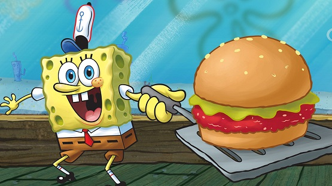
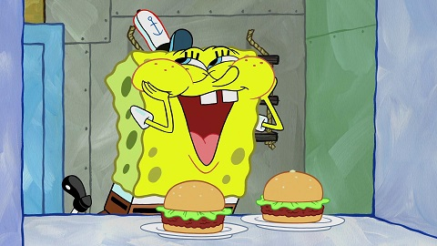

The Famous Krabby Patty

The Krabby Patty is the Krusty Krab's signature food item. It is a
meatless hamburger of sorts made from seaweed-sea buns, undersea
vegetables, condiments, and a patty; it can also be ordered with cheese.
The ingredients of the patty itself are purposely kept secret throughout
the entire series, but creator Stephen Hillenburg had stated that the
patties are entirely vegetarian. It was created by Mr. Krabs and Plankton.
Ingredients
For the patties
- 1 pound crabmeat
- 1 egg, lightly beaten
- 1/2 cup breadcrumbs
- 1/4 cup mayonnaise
- 2 tablespoons minced chives
- 1 tablespoon Dijon mustard
- 1 tablespoon lemon juice
- 1 teaspoon celery seed
- 1 teaspoon onion powder
- 1/4 teaspoon freshly ground pepper
- 1/4 teaspoon of cayenne pepper
- Hot sauce/Tabasco sauce to taste
- 1 tablespoon extra-virgin olive oil
- 2 teaspoons unsalted butter
For the onion rings:
- 4 large sweet onions, peeled and sliced into thick rings
- 1 cup eggs (beaten)
- 1 cup all-purpose flour
- 2 cups bread crumbs
- 1 teaspoon salt
- 2 teaspoons ground black pepper
- 1 1/2 teaspoons cayenne pepper
- 1 teaspoon dried oregano
- 1 teaspoon dried basil
- 2 teaspoons red pepper
- 1 quart oil for frying
For the sandwich
- Hamburger buns (whatever you like) lightly toasted
- Ketchup
- Mustard
- American Cheese
- Dill Pickle slices
- Lettuce
- Tomato
Preparation
-
Mix crab, egg, breadcrumbs, mayonnaise, chives, mustard, lemon juice,
celery seed, onion powder, pepper and hot sauce in a large bowl. Form
into 6 patties.
-
Heat oil and butter in a large nonstick skillet over medium heat until
the butter stops foaming. Cook the patties until golden brown, about 4
minutes per side.
- Place the onions, eggs, and flour into separate shallow bowls.
-
In another shallow bowl, stir together the bread crumbs, salt, pepper,
cayenne, oregano, basil, and red pepper.
-
Heat oil in a heavy skillet or deep-fryer to 365 degrees F (180 degrees
C). Dip rings of onion into flour, then into the egg, and then into the
bread crumb mixture, shaking off any excess after each dip.
-
Carefully drop each onion ring into the hot oil, and fry for about 30
seconds on each side, or until golden. Remove from hot oil to paper
towels to drain.
Assemble as follows:
- Bottom bun
- Patty
- Ketchup
- Mustard
- Cheese
- Two pickle slices
- Lettuce
- Tomato
- Onion Rings
- Top bun
and now enjoy

Reference for the recipe:click here
Return to top
Return the Main Page